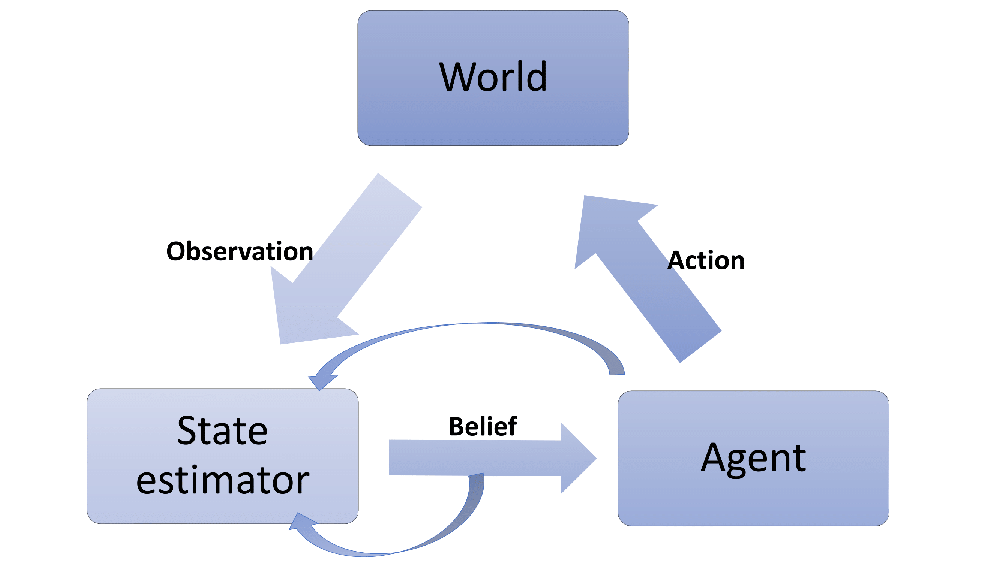

Reinforcement Learning
Cooperative Representation Learning with Self-Supervised Synchronization
 |
In the Deepmind reinforcemen learning environments, the numerical vectors far outperform images as input for general policys, such as PPO. However, there is a natural connection between the images and vectors which are some numerical values representing motions and angles of the robot joint. We leverange this idea to learn an encoder that maps the image to the latent space with self-supervised synchronization of images and vectors. We show that this latent space contains more significant informatin and could be used as input to achieve better performance in reinforcement learning problems. In Process, collaborating with Guangxiang Zhu*, Hao Cheng, advised by Chongjie Zhang. |
Markov Decision Process and Variants: a Survey on Robot Learning
|  | In this survey, I want to summarize approaches in robot reinforcement learning. The survey mainly introduced Markov Decision Process based methods including some variants including partially observable Markov Decision Process, Bayesian learning based POMDP, model predictive control approach and KL divergence upper bound based POMDP. Apart from applying other cutting-edge machine learning and deep learning methods, we can also make use of other control methods such model predictive control in robot learning problems. pdf |
Model-free Methods in Policy Search: a Talk
This talk is presented on a seminar at the RL group of Tsinghua University directed by Chongjie Zhang. In this talk, basic idea of reinforcement learning as well as some model-free methods are introduced. Two popular direction of reinforcement learning include policy gradient and weighted maximum likelihood approaches. In addition, model-based policy search method like PILCO is also shown in the talk. slides